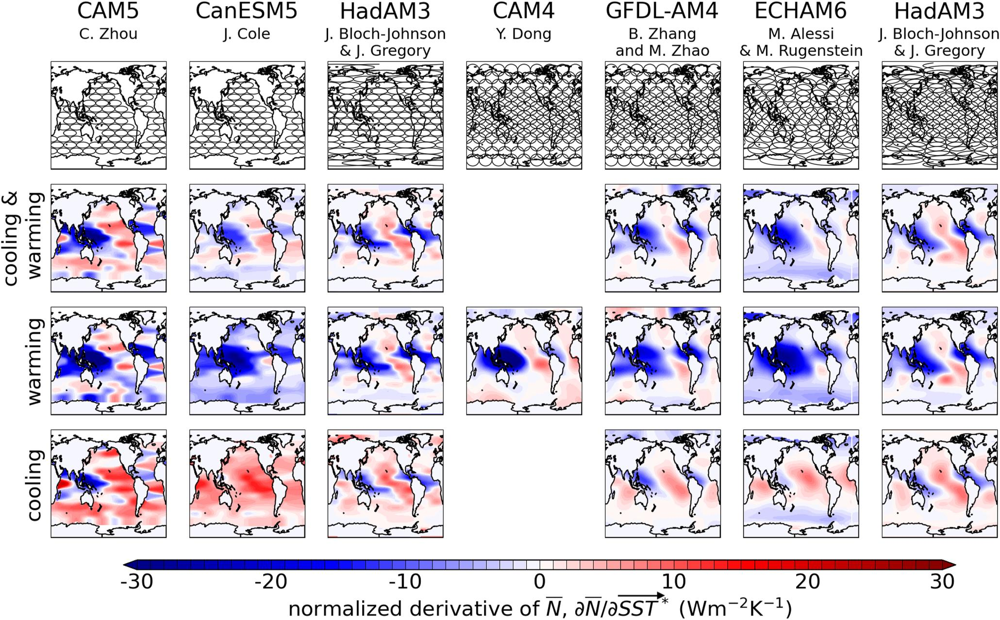
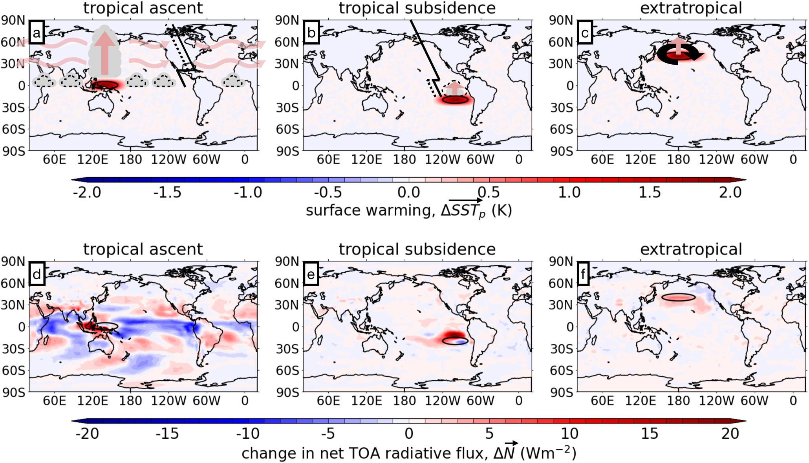
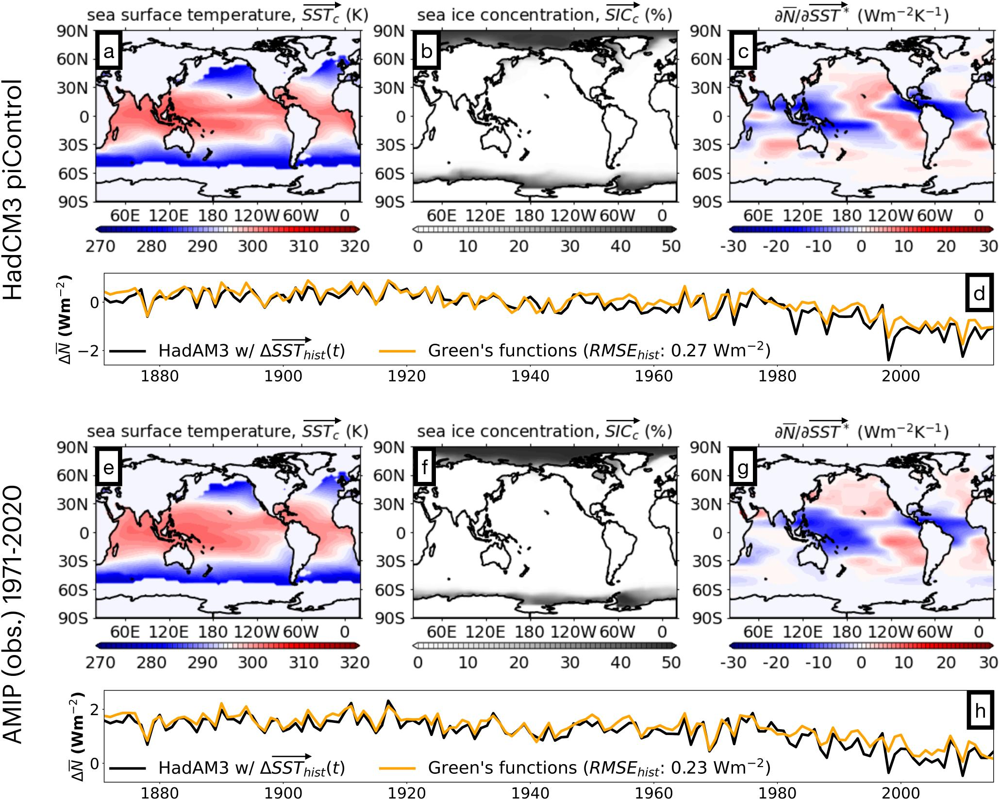
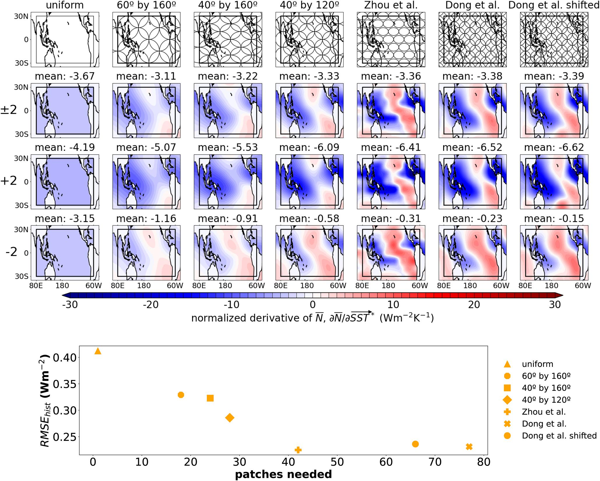
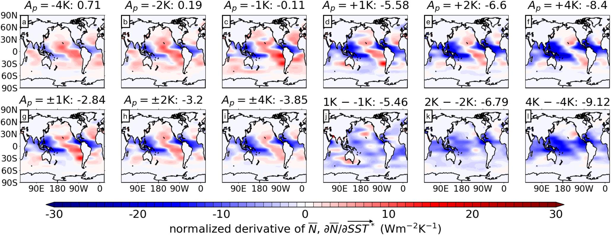
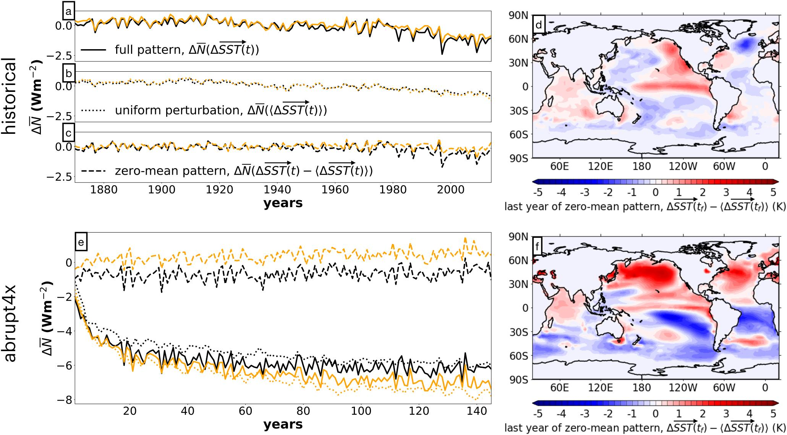

Protocol Standardization
Defines shared experiment setup for cross-model Green's function diagnostics.
Forcing and Feedback • Radiative Feedbacks
Journal of Advances in Modeling Earth Systems (2024)
The GFMIP protocol standardizes regional SST-perturbation experiments to build comparable Green’s functions and quantify pattern-effect feedback contributions across models.

Protocol Standardization
Defines shared experiment setup for cross-model Green's function diagnostics.
Nonlinearity Identified
Warming-cooling asymmetry and patch-size dependence are first-order design considerations.
Practical Guidance
HadAM3 tests support a tractable compromise around perturbation amplitude and run duration.
Paper Citation
Bloch-Johnson, J., M. A. A. Rugenstein, M. J. Alessi, C. Proistosescu, M. Zhao, B. Zhang, et al., 2024: The Green's Function Model Intercomparison Project (GFMIP) Protocol. Journal of Advances in Modeling Earth Systems, 16, e2023MS003700. https://doi.org/10.1029/2023MS003700
Establish a consistent model intercomparison protocol for atmospheric Green's functions to diagnose the climate response to observed and idealized SST patterns.
Extracted directly from Bloch-Johnson et al. (2024), JAMES, https://doi.org/10.1029/2023MS003700.
Figure 1
Figure 2

Figure 3

Figure 4

Figure 5a

Figure 5b
